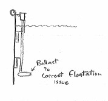
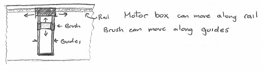
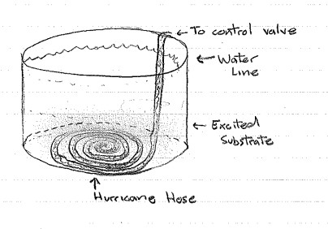
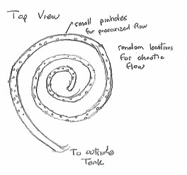
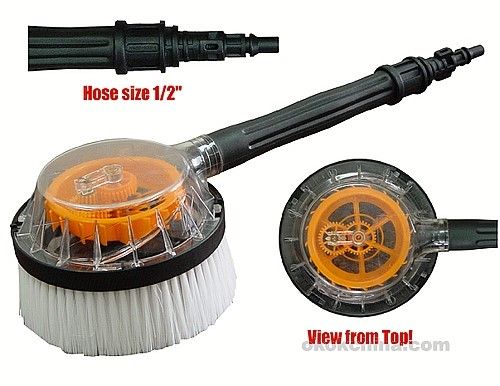

Shedd Aquarium

For my Design Capstone, I am currently working on a project with the Shedd Aquarium. The aquarium wants to find a better way to clean their quarantine tanks. The tank debris consist of food particles, fatty oils and algae that need to be removed from the wall. These are deposited on the walls and in the sand or coral on the floor. To clean the tank, we must clean this material into the water, where the filtration system can remove it.
My team is currently working on three different designs. The first design concept is the Rail Wall Cleaner, an autonomous device that runs along a rail on the inner part of the tank. The device will have a mechanical system above water that lowers and raises a brush/scrubbing pad to clean the wall vertically. The device will move horizontally along the rail to clean every part of the tank walls.
 The second design concept is the Hose System, a valve-controlled hose network that excites the substrate at the bottom of the tank by using water pressure or air pressure pushing through small holes on all sides of the hoses. The pressure coming out of the holes excites the substrate so that debris and organic matter can enter the water and be filtered out.
 The third concept is a Pressurized Hand-held Device, a tool used by the divers, which can be divided into two sub-directions. One direction uses pressurized water or air shooting out of it to clean all parts of the tank directly with the pressurized fluid. The other direction involves using the water or air pressure to spin or vibrate a brush that would clean the walls.
